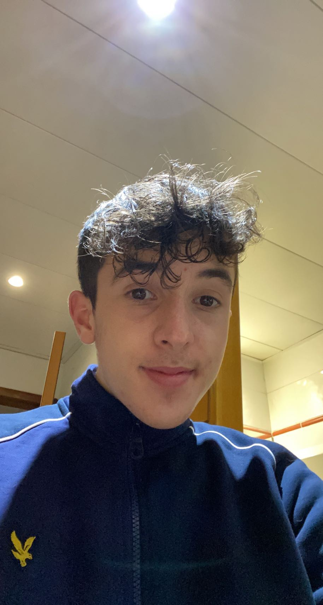

ESTEBAN MERLET

ETUDIANT EN JOURNALISME PLURIMÉDIA / EFJ BORDEAUX
Blog Personnel
Profil personnel
Persévérant, rigoureux et curieux, je suis à la recherche d'un stage de journalisme pour aguerrir des bases solides dans le métier. Je possède une bonne culture sportive mais je m'intéresse à toutes les facettes du journalisme.
Compétences Acquises
Réalisation de montage
Ecriture D'article
Réalisation d'interview
Réalisation de reportage
Expérience Professionnelle
Juillet et Octobre 2021 au Leclerc : Mise en rayon des produits Préparation des commandes
Décembre 2017 :Stage dans une entreprise de statistiques footballistiques (OPTA JEAN)
Parcours Scolaire
Lycée Victor Louis : Baccalauréat Général
Lycée Victor Louis : Bachibac ( baccalauréat Espagnol )
Centres d'intérêts
Football
Voyage